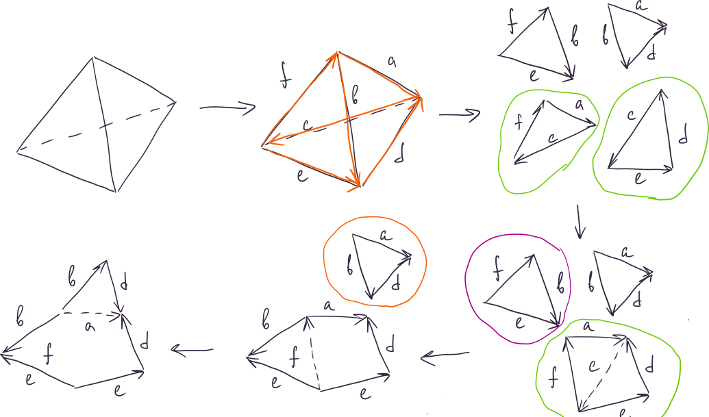

Определение: Связная многогранная поверхность \(\mathcal{F}\) в \(\mathbb{R}^n\) – это конечное семейство \(\{F_i \subset \mathbb{R}^n\}\) пространственных многоугольников (граней), для которых выполнены следующие условия:
\(\forall i \ne j \,\,\,\, F_i \cap F_j\) или пусто, или состоит из одной общей для \(F_i\) и \(F_j\) вершины, или состоит из одного общего для \(F_i\) и \(F_j\) ребра \(e\) (в этом случае грани \(F_i\) и \(F_j\) смежны по ребру \(e\)).
Для каждого ребра \(e \in F_i\) существует не более одного многоугольника \(F_j \,\,\,\, j \ne i\) смежного с \(F_i\) по ребру \(e\).
Для любых многогранников \(F_i\) и \(F_j, \,\,\,\, i \ne j\) существует последовательность многоугольников \(F_i = F_{i1}, F_{i2}, \ldots, F_{is} = F_j\), такие что \(\forall j \in \{1, \ldots s - 1\} \,\,\,\, F_{ij}\) смежен с \(F_{ij+1}\) по некоторому ребру. Такая последовательность – цепочка многоугольников, соединяющая \(F_i\) и \(F_j\).
Для любых двух многогранников, пересекающихся по вершине существует цепочка, соединяющая их, такая, что каждый из многоугольников, входящих в цепочку, содержит эту вершину.
(Убрали требование «никакие две грани не лежат в одной плоскости»)
Определение: Пусть \(\mathcal{F} = \{F_i\}\) – многогранная поверхность \(\mathcal{F}\) – это вершины и ребра поверхности \(\mathcal{F}\).
Определение: Пусть \(\mathcal{F} = \{F_i\}\) – многогранная
поверхность. Вершина (ребро), принадлежащая грани, инцидентна
этой грани. Ребро инцидентное ровно одной грани – граничное,
иначе – внутреннее.
Если у \(\mathcal{F}\) нет граничных ребер, то \(\mathcal{F}\) – замкнутая.
Определение: Связная многогранная поверхность в \(\mathbb{R}^n\) - \(n\)-мерная. (хотя она в \(n + 1\))
Поверхность \(\mathcal{F}\) подмножество \(\mathbb{R}^3\), поэтому на нем можно задать индуцированную из \(\mathbb{R}^3\) топологию.
Можно задать топологию на \(\mathcal{F}\), склеив по ребрам несвязную сумму индуцированных из плоскости топологий на гранях.
Определение: Так как теперь в определении поверхности не нужно, чтобы грани не лежали в одной плоскости, можем разбить каждую грань на треугольники. Подученная при этом поверхность – триангулированная.
Утверждение: Любая связная замкнутая многогранная поверхность гомеоморфна некоторой поверхности, полученной из многоугольника склейкой его сторон.
Доказательство:

Определение: Пусть \(\mathcal{F}\) – связная многогранная поверхность. Пометим все ребра \(\mathcal{F}\) стрелками и буквами. Будем обходить многогранник по его границе и записывать последовательно буквы ребер по правилу: если идем в направлении стрелки, то саму букву, иначе букву в степени \(-1\). Полученная последовательность букв – слово склейки поверхности \(\mathcal{F}\).
Обозначения:
\(S^2\) – сфера.
\(\mu\) – пленка Мёбиуса.
\(D^2\) – диск (круг).
Определение: Элементарные операции с
поверхностями – это:
1. Вырезание диска.
2.
Приклеивание ручки.
1. Вклейка пленки Мёбиуса.
Определение: Сфера с \(g\) ручками – это поверхность, полученная приклеиванием к сфере \(g\) ручек.
Обозначается: \(M_g\)
Определение: Сфера с \(m\) пленками Мёбиуса – это поверхность, полученная вклейкой в сферу \(m\) пленок Мёбиуса.
Обозначается: \(N_m\)
Замечание: Сфера с \(0\) ручками – это просто сфера. Сферы с пленками Мёбиуса рассматриваются для \(m \ge 1\).
Утверждение: Слово склейки для \(M_g\) имеет вид \(a_1b_1a_1^{-1}b_1^{-1}\ldots a_kb_ka_k^{-1}b_k^{-1}\), слово склейки для \(N_m\) имеет вид \(a_1^2\ldots a_m^2\).
Доказательство:
Определение: Сфера с \(g\) ручками и сфера с \(m\) пленками Мёбиуса – это модельные поверхности.
Теорема: Каждая связная двумерная замкнутая многогранная поверхность гомеоморфна одной из модельных поверхностей.
Доказательство: куча картинок \(\,\,\,\,\blacksquare\)
Определение: Пусть \(\mathcal{F}\) – связная замкнутая двумерная
многогранная поверхность. \(F_1, \ldots,
F_m\) – ее грани. У каждой грани можно задать ориентацию
(направление обхода границы или задать ориентацию плоскости, содержащей
грань).
Пусть \(e\) – ребро \(\mathcal{F}\). Оно инцидентно двум граням
\(F_i\) и \(F_j\), в которых задана ориентация, то есть
на ребре \(e\) указаны два направления.
Если эти направления совпадают, то ориентации граней \(F_i\) и \(F_j\) – согласованы.
Определение: Многогранная поверхность
ориентирована, если у каждой ее грани задана ориентация и для
каждой пары смежных граней ориентации согласованы.
Семейство
согласованных ориентаций граней – ориентация
поверхности.
Если существует ориентация поверхности, то
поверхность – ориентируемая.
Определение: Пусть \(\mathcal{F}\) – связная замкнутая двумерная многогранная поверхность. Рассмотрим замкнутую цепочку граней \(F_1, \ldots, F_m\) (замкнутая - \(F_1\) смежна с \(F_m\)). Зададим на каждой грани цепочки ориентацию. Если ориентации \(F_1\) и \(F_m\) согласованы, то цепочка сохраняет ориентацию, в ином случае цепочка обращает ориентацию.
Утверждение: Связная двумерная многогранная поверхность \(\mathcal{F}\) ориентируема \(\Leftrightarrow\) в \(\mathcal{F}\) нет цепочек обращающих ориентацию.
Доказательство:
Утверждение: Поверхность, содержащая лист Мёбиуса, неориентируема.
Доказательство:
Утверждение: Гомеоморфные многогранные поверхности ориентируемы или неориентируемы одновременно.
Доказательство:
Определение: Эйлерова характеристика многогранной поверхности – это число \(v - e + f\), где \(v\) – число вершин, \(e\) – число ребер и \(f\) – число граней поверхности.
Утверждение: Эйлерова характеристика любых поверхности не зависит от разбиения на грани и не меняется при гомеоморфизмах.
Доказательство:
Теорема: Если многогранные поверхности гомеоморфны разным модельным поверхностям, то они не гомеоморфны.
Доказательство: